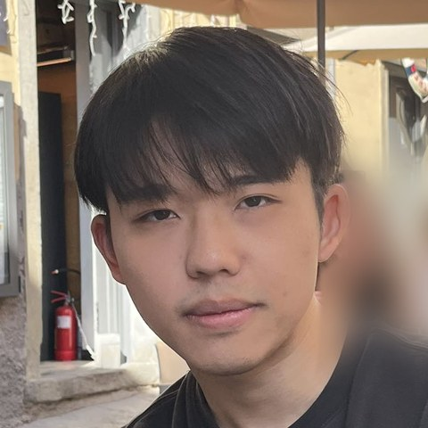

About
I am a Ph.D. student in Computer Science at the University of Colorado Boulder, advised by Prof. Yueqi Chen. I build the classical systems that fault-tolerant quantum computers depend on: the control hardware that drives and reads out the qubits, and the decoders that turn error syndromes into corrections in real time.
I am also an affiliate of the QubiC team at Lawrence Berkeley National Laboratory, where I lead the development of QubiC 3.0, and I work on quantum error correction decoding with Prof. Xun Gao's group (Physics and JILA, CU Boulder). Before CU Boulder, I received my B.S. in Computer Science from Nanjing University.
Research interests:
- Quantum control systems on FPGAs and RFSoCs
- Real-time quantum error correction decoding
- Fault-tolerant quantum computer architecture
News
- Ant-Q v3 is on arXiv, with code, data and bitstreams on Zenodo.
- Our paper QEX on quantum computing for classical program analysis appears at IEEE QCE 2025.
- Presented QCheck at the ACM QSys '25 workshop (co-located with MobiSys 2025) in Anaheim, CA.
- Started my Ph.D. at CU Boulder. SeaK appears at USENIX Security 2024.
Publications
-
arXiv
Breaking Memory Bottlenecks in Quantum Control Systems for More Precise Experiments and Higher Throughput Computing arXiv:2608.06318, 2026PDF Code Artifact
BibTeX
@misc{guang2026antq, title = {Breaking Memory Bottlenecks in Quantum Control Systems for More Precise Experiments and Higher Throughput Computing}, author = {Guang, Yicheng and Vora, Neel and Xu, Yilun and Chen, Yueqi and Huang, Gang}, year = {2026}, eprint = {2608.06318}, archivePrefix = {arXiv}, primaryClass = {cs.AR} }Ant-Q backs the QubiC control system with on-board DDR4 and ping-pong buffers on chip. Board time beyond circuit execution drops from up to 104.5% to at most 0.53%, and a transmon qubit runs uninterrupted 100 s Ramsey records. Integrated into QubiC's open-source gateware and software.
-
QCE '25
On the Potential of Quantum Computing in Classical Program Analysis IEEE International Conference on Quantum Computing and Engineering (QCE), 2025PDF arXiv DOI
BibTeX
@inproceedings{guang2025qex, title = {On the Potential of Quantum Computing in Classical Program Analysis}, author = {Guang, Yicheng and Zanotta, Pietro and Zhou, Kai and Chen, Yueqi and Ayanzadeh, Ramin}, booktitle = {2025 IEEE International Conference on Quantum Computing and Engineering (QCE)}, pages = {2364--2374}, year = {2025}, publisher = {IEEE}, doi = {10.1109/QCE65121.2025.00257} }QEX synthesizes quantum circuits that hold a classical program's states in superposition and track data dependencies between variables through entanglement, so many program behaviors are explored at once.
-
QSys '25
Quantum Methods for Boundary Checking in Classical Programs ACM Workshop on Exploring Sensing, Computing, and Communication Systems with Quantum (QSys), co-located with MobiSys 2025PDF DOI
BibTeX
@inproceedings{guang2025qcheck, title = {Quantum Methods for Boundary Checking in Classical Programs}, author = {Guang, Yicheng and Zanotta, Pietro and Zhou, Kai and Chen, Yueqi and Ayanzadeh, Ramin}, booktitle = {Proceedings of the 23rd Annual International Conference on Mobile Systems, Applications and Services}, series = {MobiSys '25}, pages = {775--778}, year = {2025}, publisher = {ACM}, doi = {10.1145/3711875.3737656} }QCheck turns a program into a quantum circuit over all of its feasible executions and uses fixed-point quantum search to find boundary violations such as out-of-bounds accesses and integer overflows.
-
USENIX Sec '24
SeaK: Rethinking the Design of a Secure Allocator for OS Kernel USENIX Security Symposium, 2024PDF Slides
BibTeX
@inproceedings{wang2024seak, author = {Zicheng Wang and Yicheng Guang and Yueqi Chen and Zhenpeng Lin and Michael Le and Dang K Le and Dan Williams and Xinyu Xing and Zhongshu Gu and Hani Jamjoom}, title = {{SeaK}: Rethinking the Design of a Secure Allocator for {OS} Kernel}, booktitle = {33rd USENIX Security Symposium (USENIX Security 24)}, year = {2024}, isbn = {978-1-939133-44-1}, address = {Philadelphia, PA}, pages = {1171--1188}, publisher = {USENIX Association} }SeaK hardens the kernel heap by isolating only the object types that matter, and its protections can be turned on or off without rebuilding or rebooting the kernel.
Projects
QubiC 3.0 in progress
The next generation of the QubiC control system at Lawrence Berkeley National Laboratory. I lead its development, starting with instruction streaming from DDR4 and a readout path to DDR4 in the RISC-Q control SoC.
Service
- Reviewer, IEEE International Conference on Quantum Computing and Engineering (QCE), 2025 and 2026
- Reviewer, Quantum Science and Technology
- Reviewer, Integration, the VLSI Journal
Education
- Ph.D. in Computer Science, University of Colorado BoulderAdvisor: Prof. Yueqi Chen2024 – present
- B.S. in Computer Science, Nanjing University2020 – 2024
- Exchange student, The University of Hong KongSpring 2022